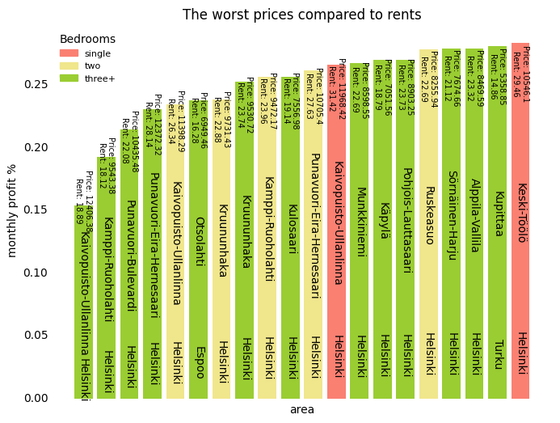
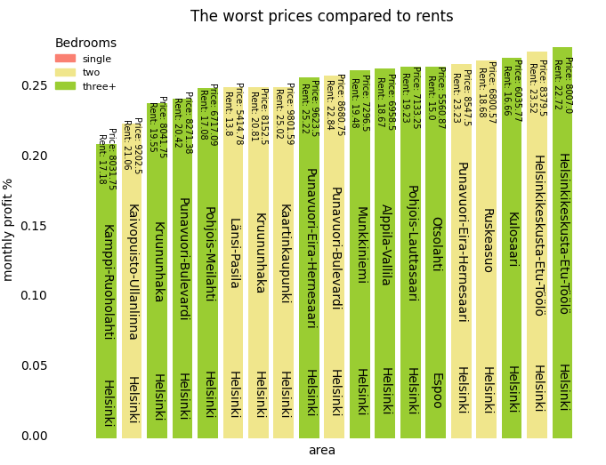

Making a Housing Investment the Smart Way
Making a housing investment takes a lot of starting income and the best apartments are hard to get access to. Or are they? According to our research comparing the costs and rents of different cities in Finland by postal code we have found out that a lot of suburbs in different cities have surprisingly cheap prices and yet yield a great amount of rental income.
Summarizing 2022s
The best areas for investment
When looking at the best possible areas to make an investment the results are unexpected. None of the classic central areas pop up. Here are the best investment options with the best monthly profit % compared to the price of a square meter.
compared to the worst possible investment areas

Comparing bedroom counts in apartments
When comparing the different postal code areas separating them by the number of bedrooms, we can see a clear increase in rent for single bedroom apartments at the same price level as the other 2 or 3 + bedroom options. Thus a single bedroom apartment is in general the way to go for a housing investor
Comparing cities
On the other hand, color coding the same areas by the city they are located in we can see some areas in Helsinki being extremely expensive to purchase, but still give same level rental income as other cheaper options, meaning some areas in Helsinki seem way overpriced
Predicting the future
With our modern AI model, we can see into the future and predict what areas are going to be the best choices to look for in the future in 5 year span. Welcome to year 2027
The best areas in the future
Using the same methods as used in 2022s data we can see that some areas have stayed at the top, but also some new up-and-comer areas peak out their heads.
Compared to worst future investment areas

Comparing bedroom counts in apartments in the future
Applying the same scatterplot to predicted values we can see that the rents are likely to rise by a lot as well as the prices of apartments. One-bedroom apartments keep their lead when compared to other options
Comparing cities in the future
Exploring the city color coded data, it can be seen that Helsinki keeps becoming even more overpriced in some areas.
Conclusion:
According to our data, it is not optimal to go for a housing investment in a well-respected area, where house prices are a lot higher than in other less respected areas. It can also be seen that high house prices do not always mean better rental income, especially in the Helsinki area. It is also important to look for smaller apartments, with a lower initial investment price, as they also usually produce the greatest income, compared to larger apartments.
In the future we do not expect large changes in the areas giving the best profit. Some areas, like Pansio-Perno, drop out of the best ones so check the future of your area before investing. Additionally we do not see changes in Helsinki, it continues to be overpriced compared to the best areas.
Put in short: look for single bedroom apartments in suburban areas near centers